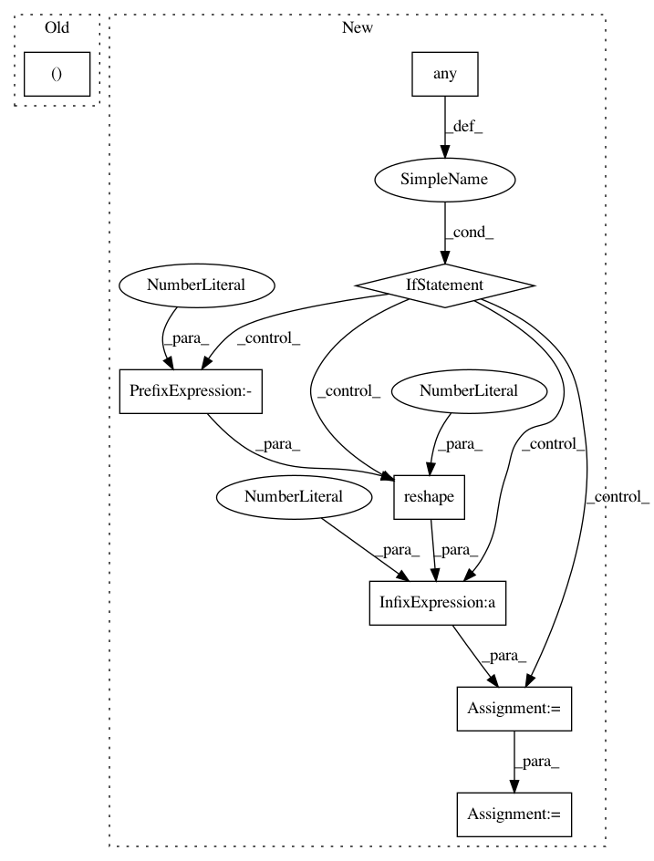

4222b5c6a93692293b471969377cb371bd907bd7,mushroom/algorithms/batch_td.py,FQI,_partial_fit,#FQI#Any#Any#,69
Before Change
if y is None:
target = reward
else:
max_q, _ = max_QA(next_state, absorbing, self.approximator)
target = reward + self._gamma * max_q
sa = [state, action]
After Change
target = reward
else:
q = self.approximator.predict_all(next_state)
if np.any(absorbing):
q *= 1 - absorbing.reshape(-1, 1)
max_q = np.max(q, axis=1)
target = reward + self._gamma * max_q
sa = [state, action]
self.approximator.fit(sa, target, **self.params["fit_params"])
In pattern: SUPERPATTERN
Frequency: 3
Non-data size: 8
Instances
Project Name: AIRLab-POLIMI/mushroom
Commit Name: 4222b5c6a93692293b471969377cb371bd907bd7
Time: 2017-10-11
Author: carloderamo@gmail.com
File Name: mushroom/algorithms/batch_td.py
Class Name: FQI
Method Name: _partial_fit
Project Name: AIRLab-POLIMI/mushroom
Commit Name: 4222b5c6a93692293b471969377cb371bd907bd7
Time: 2017-10-11
Author: carloderamo@gmail.com
File Name: mushroom/algorithms/batch_td.py
Class Name: FQI
Method Name: _partial_fit_boosted
Project Name: AIRLab-POLIMI/mushroom
Commit Name: 4222b5c6a93692293b471969377cb371bd907bd7
Time: 2017-10-11
Author: carloderamo@gmail.com
File Name: mushroom/algorithms/dqn.py
Class Name: DoubleDQN
Method Name: _next_q